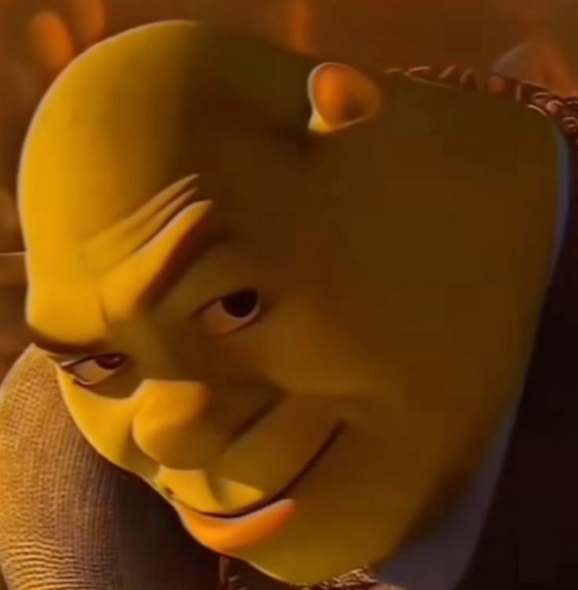

Un troll propre
Tu greffes juste un script. Pas besoin de framework, pas besoin de rituel occulte.
Shreksophone transforme un clic banal en apparition plein ecran de Shrek sur solo de saxophone. C'est inutile, excessif, et donc tres important.

Tu greffes juste un script. Pas besoin de framework, pas besoin de rituel occulte.
Bouton clique, page remplacee, plein ecran lance. Le sabotage est net et sans bavure.
Le projet ne cherche pas a paraitre serieux. Il cherche a etre memorable, et il y arrive.
Une petite previsualisation pour jauger le potentiel de nuisance avant de l'injecter dans l'environnement d'un collegue innocent.
Version ciblee pour les elements consentants, ou version totale pour un environnement entierement compromis.
shrek.min.jsAffecte uniquement les elements avec la classe shrek-troll.
<button class="shrek-troll">Clique pas</button>
<button class="shrek-troll">Moi non plus</button>
<script src="https://shrek.charles-lindecker.com/dist/shrek.min.js"></script>shrek-all.min.jsAffecte tous les <button> et tous les <a>.
<a href="#">Ne clique pas</a>
<button>Moi non plus</button>
<script src="https://shrek.charles-lindecker.com/dist/shrek-all.min.js"></script>